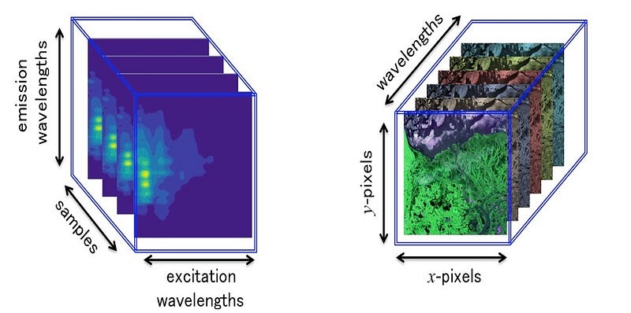
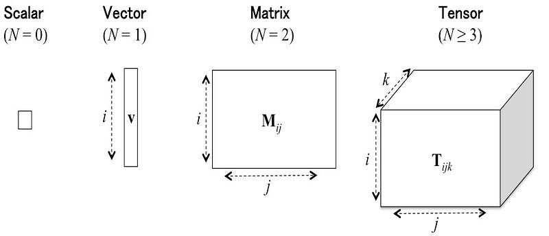
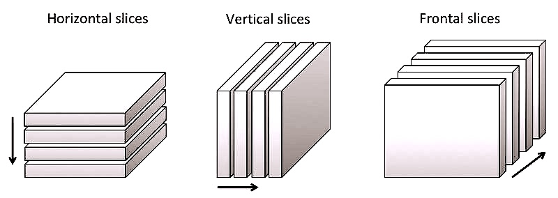
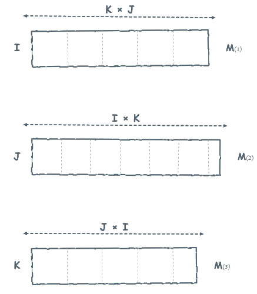
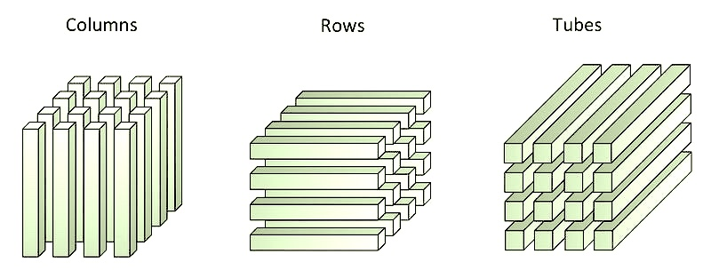
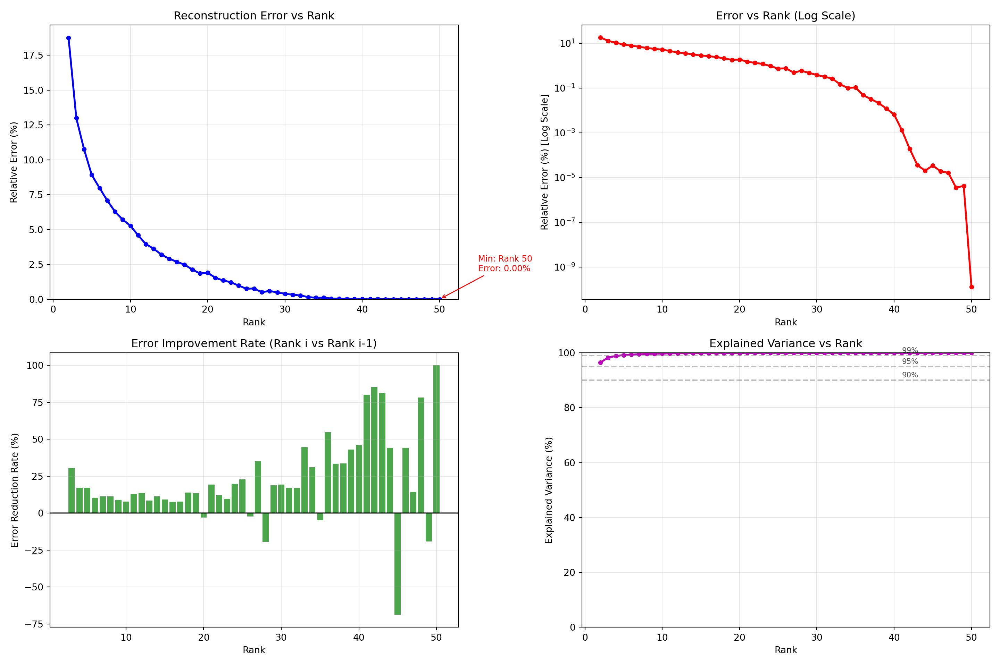
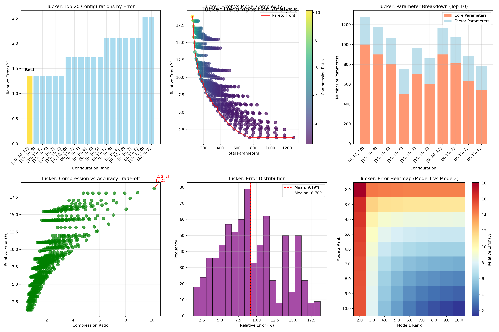
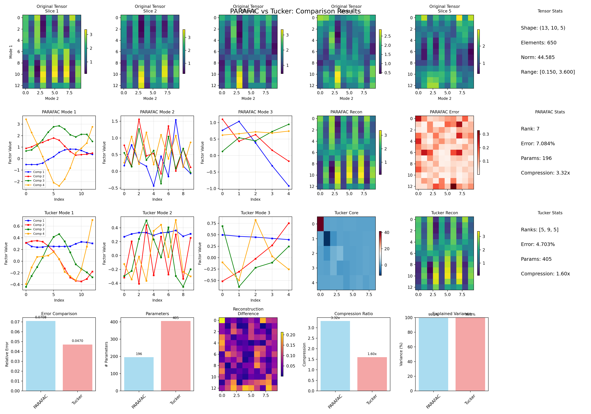

import numpy as np
import matplotlib.pyplot as plt
from scipy.stats import pearsonr
import warnings
warnings.filterwarnings('ignore')Tensor Decomposition: PARAFAC and Tucker
Tensor Decomposition
PARAFAC
Tucker3
Python
Traditional data analysis methods often rely on matrices, but when applied to complex, multimodal datasets they can struggle to uncover meaningful latent structures. High-order (multiway) data analysis extends beyond the two-dimensional matrix framework, providing more powerful tools for identifying patterns and relationships in multi-dimensional data. In this post, I review two cornerstone techniques (PARAFAC and Tucker) which generalize familiar methods like singular value decomposition (SVD) and bilinear principal component analysis (PCA) to higher-order tensors.
Background
In many areas of science, like spectroscopy, data are usually stored as vectors or matrices. But in real life, data often have more than two dimensions. For example, measurements that vary across time, space, and different conditions all at once. To work with these kinds of multi-dimensional datasets, we use multi-linear algebra. It’s the higher-dimensional version of linear algebra. Just as a matrix can be broken down with tools like Singular Value Decomposition (SVD) or Eigenvalue Decomposition (EVD) these larger data structures can also be decomposed with special methods. These decompositions help us find patterns that would be hidden if we only looked at two-dimensional data.
For example, Excitation-Emission Matrix (EEM) fluorescence spectroscopy and hyperspectral imaging naturally produce three-dimensional data.

In situation where the collected data are not intrinsically 3-ways but rather tidy (\(i\) observations × \(j\) variables), we can add for instance “time” as a third mode, in order to have three inputs (\(i\) observations × \(j\) variables × \(k\) time). In other words, by adding an additional modality, we obtain a collection of matrices structured in a table with three entries called third-order tensor. Likewise, if we add “days” as the fourth mode into the previous data (\(i\) observations × \(j\) variables × \(k\) time × \(l\) days), we obtain a fourth-order tensor. If “longitude” is added (\(i\) observations × \(j\) variables × \(k\) time × \(l\) days × \(m\) longitude), we obtain a fifth-order tensor, and so forth. Intuitively we can see that an order-\(N\) tensor is the number of modes or ways , or \(N\)-dimensional arrays. In the following we will only consider data arranged as third-order tensor \(i.e.\), 3-way data.

Third-Oder Tensor
Let \(T\) be an array with three entries, three matrix representations can be associated with this array:
\(T\) can be seen as 3 different collections of matrices. These collections are called horizontal, vertical and frontal slices. The matrices of each collection have the same dimension.

\(T\) can be considered successively as three matrices called “representations n mode”. The process of reorganizing \(T\) in these three forms is called matricization (or mode-\(k\) flattening).

\(T\) can be seen as three collections of vectors. Each collection is a table with 2 entries, the elements of which are vectors of the same dimension also called “fibers”.

Tensor Decomposition
PARAFAC
PARAFAC (Parallel Factor Analysis) is the simplest and most widely used three-way decomposition. Introduced independently by Harshman and, by Carrol and Chang (who called it CANDECOMP), PARAFAC represents the most intuitive extension of familiar techniques like Principal Component Analysis (PCA) into the three-dimensional world. PARAFAC is express by:
\[ \mathbf{X} \approx \sum_{r=1}^{R} \lambda_r \cdot (\mathbf{a}_r \otimes \mathbf{b}_r \otimes \mathbf{c}_r) \]
This equation tells us that a 3D tensor \(\textbf{X}\) can be approximated as a sum of \(R\) simple components, where each component is the outer product \((\otimes)\) of three vectors: \(\textbf{a}_r\) from mode 1, \(\textbf{b}_r\) from mode 2, and \(\textbf{c}_r\) from mode 3, scaled by weight \(\lambda_r\).
One of the defining strengths of PARAFAC is that it applies the same number of components (R) across all modes and, under mild conditions, guarantees a unique decomposition. This property of uniqueness is extremely valuable: unlike many other factorization methods, PARAFAC can recover the “true” underlying factors without ambiguity. As a result, it provides not just a mathematical approximation but an interpretable solution that reflects real-world structure. This makes PARAFAC a powerful tool for scientific discovery, with broad applications in spectroscopy, neuroscience, signal processing, and beyond.
Tucker3
Tucker3 takes a more sophisticated approach, like having an adjustable toolbox instead of a master key. While PARAFAC forces all modes to have the same number of components, Tucker3 allows each mode to have its own optimal number of factors. The Tucker3 decomposition follows this structure:
\[ \mathbf{X} \approx \mathbf{G} \times_1 \mathbf{A} \times_2 \mathbf{B} \times_3 \mathbf{C} \]
Here, \(\textbf{G}\) is the core tensor that acts as a “weighting grid,” determining how strongly each combination of factors from different modes interacts. The \(×₁\), \(×₂\), \(×₃\) symbols represent tensor contractions. Think of them as sophisticated ways of combining the core tensor with factor matrices \(\textbf{A}\), \(\textbf{B}\), and \(\textbf{C}\).
Unlike PARAFAC’s simple sum, Tucker3 creates a weighted combination where the core tensor \(\textbf{G}\) contains elements \(g_{i,j,k}\) that specify how factors from mode 1 (position \(i\)), mode 2 (position \(j\)), and mode 3 (position \(k\)) combine together. This flexibility allows Tucker3 to capture more complex interaction patterns that PARAFAC might miss.
Modeling
Python libraries
For our tensor decomposition analysis, we rely on TensorLy, a powerful Python library specifically designed for multilinear algebra and tensor operations. TensorLy provides a unified, user-friendly interface for tensor computations while maintaining computational efficiency through optimized backends.
import tensorly as tl
from tensorly.decomposition import parafac, tuckerWe also specify the computational backend with tl.set_backend('numpy'), which determines how TensorLy performs its underlying mathematical operations. TensorLy supports multiple backends including NumPy, PyTorch, TensorFlow, and JAX, each offering different advantages depending on the application. For more details see here.
np.random.seed(42)
tl.set_backend('numpy')Dataset
For this post, we use a fascinating dataset from pioneering linguistic research by Ladefoged et al. (1971), that captures how our tongues move when we speak. The study used X-ray imaging to study tongue shapes as five different speakers pronounced various English vowels. By mapping tongue positions onto a defined grid, they created a unique 3D dataset that reveals the biomechanics of human speech.
The tensor has dimensions \(5 \times 10 \times 13\), representing:
- 5 speakers (different individuals)
- 10 vowels (various English vowel sounds)
- 13 grid positions (spatial measurements in centimeters)
This creates a rich, multi-dimensional dataset perfect for demonstrating tensor decomposition techniques. The original study aimed to identify the fundamental patterns underlying tongue movement during speech. The data was preprocessed by centering across vowels, and the researchers found evidence for two definitive components in the speech patterns, with a possible third component that couldn’t be reliably established. This real-world complexity makes it an excellent example for comparing different tensor decomposition methods like PARAFAC and Tucker, as it contains the kind of structural challenges often found in genuine scientific data. For complete experimental details, see the original research paper.
Code
X = np.array([
[2.45, 2.40, 2.40, 2.50, 2.45, 2.05, 1.65, 1.00, 0.45, 0.40, 0.55, 0.55, 0.95],
[2.55, 2.05, 1.95, 1.90, 1.80, 1.60, 1.30, 0.95, 0.55, 0.65, 0.90, 0.90, 1.05],
[2.35, 1.90, 1.80, 1.80, 1.80, 1.55, 1.30, 0.95, 0.65, 0.70, 0.90, 0.85, 1.05],
[2.50, 2.05, 1.65, 1.65, 1.55, 1.45, 1.25, 1.05, 0.70, 1.05, 1.20, 1.15, 1.10],
[2.05, 1.50, 1.35, 1.50, 1.55, 1.45, 1.30, 1.15, 0.95, 1.40, 1.55, 1.40, 1.25],
[1.55, 1.00, 0.85, 1.00, 1.25, 1.35, 1.50, 2.00, 2.10, 2.55, 2.65, 2.35, 2.00],
[1.65, 0.90, 0.65, 0.65, 0.75, 0.95, 1.40, 1.90, 2.15, 2.60, 2.70, 2.60, 2.40],
[1.90, 1.30, 0.95, 0.85, 0.75, 0.75, 0.95, 1.30, 1.65, 2.15, 2.30, 2.25, 2.30],
[2.40, 1.60, 1.45, 1.25, 1.00, 0.95, 0.80, 0.85, 1.10, 1.50, 2.10, 2.00, 1.65],
[2.70, 1.95, 1.50, 1.30, 0.90, 0.70, 0.55, 0.55, 0.95, 1.45, 1.80, 1.90, 2.00],
[2.95, 2.70, 2.75, 2.75, 2.70, 2.60, 2.25, 1.00, 0.35, 0.15, 0.30, 0.60, 1.15],
[2.40, 2.20, 2.25, 2.20, 2.25, 2.15, 1.85, 1.25, 0.75, 0.75, 0.90, 1.05, 1.10],
[2.25, 2.45, 2.65, 2.65, 2.40, 2.20, 2.05, 1.55, 0.95, 0.85, 1.10, 1.40, 1.65],
[2.00, 1.75, 1.90, 2.30, 2.40, 2.20, 2.00, 1.45, 1.00, 1.05, 1.40, 1.75, 1.80],
[1.25, 1.15, 1.30, 1.65, 1.95, 1.90, 1.80, 1.65, 1.40, 1.70, 2.15, 2.45, 2.60],
[0.45, 0.25, 0.30, 0.40, 1.15, 1.70, 1.95, 2.30, 2.60, 2.95, 3.30, 3.15, 2.60],
[0.40, 0.20, 0.20, 0.30, 0.60, 1.05, 1.35, 1.65, 2.60, 3.05, 3.45, 3.60, 3.40],
[1.00, 0.55, 0.55, 0.45, 0.65, 0.80, 1.15, 1.55, 2.25, 2.75, 3.20, 3.35, 3.25],
[1.30, 0.70, 0.65, 0.45, 0.65, 0.90, 1.20, 1.45, 1.90, 2.40, 2.85, 2.80, 2.45],
[2.15, 1.80, 1.50, 1.05, 0.65, 0.55, 0.65, 0.80, 0.95, 1.55, 2.10, 2.35, 2.60],
[2.10, 2.00, 2.15, 2.05, 1.95, 1.80, 1.45, 1.10, 0.75, 0.65, 0.75, 0.80, 0.90],
[2.00, 1.70, 1.90, 1.95, 1.90, 1.75, 1.35, 1.15, 0.95, 1.00, 1.10, 0.90, 0.65],
[1.95, 1.80, 1.80, 1.95, 1.95, 1.95, 1.65, 1.25, 0.90, 0.85, 1.05, 0.95, 0.90],
[1.55, 1.40, 1.50, 1.70, 1.85, 1.80, 1.90, 1.80, 1.75, 1.70, 1.70, 1.40, 1.10],
[1.65, 1.25, 1.40, 1.70, 1.90, 1.95, 2.05, 2.10, 1.95, 1.95, 2.15, 2.10, 1.70],
[0.95, 0.55, 0.70, 1.15, 1.65, 2.20, 2.65, 2.95, 3.05, 3.20, 3.35, 2.95, 1.90],
[1.20, 0.65, 0.45, 0.65, 0.75, 1.00, 1.45, 2.10, 2.40, 2.65, 2.80, 2.55, 1.95],
[1.55, 1.45, 1.05, 1.15, 1.05, 1.00, 1.15, 1.45, 1.90, 2.40, 2.70, 2.65, 1.85],
[1.80, 1.05, 1.05, 1.05, 1.00, 1.00, 1.15, 1.40, 1.65, 1.95, 2.15, 1.85, 1.50],
[2.00, 1.70, 1.40, 1.20, 1.00, 0.85, 0.95, 1.00, 1.10, 1.55, 1.80, 1.70, 1.25],
[2.70, 2.60, 2.55, 2.50, 2.45, 2.40, 1.80, 1.35, 0.70, 0.55, 0.75, 0.85, 1.85],
[2.25, 1.90, 1.85, 1.90, 2.15, 2.05, 1.85, 1.65, 1.35, 1.40, 1.50, 1.90, 1.80],
[2.25, 2.20, 2.30, 2.25, 2.30, 2.20, 1.70, 1.45, 0.90, 0.90, 1.10, 1.25, 1.85],
[1.90, 1.50, 1.40, 1.40, 1.65, 1.75, 1.75, 1.85, 1.60, 1.80, 1.90, 1.65, 1.50],
[1.70, 1.20, 1.05, 1.05, 1.55, 1.70, 1.80, 1.90, 1.85, 2.10, 2.35, 2.40, 2.25],
[1.05, 0.90, 0.45, 0.60, 1.45, 2.05, 2.90, 2.90, 3.00, 3.20, 3.35, 2.95, 2.15],
[0.90, 0.40, 0.45, 0.55, 1.30, 1.80, 2.30, 2.80, 3.10, 3.40, 3.45, 3.00, 2.40],
[2.00, 1.30, 1.05, 0.90, 0.95, 0.90, 1.25, 1.65, 1.80, 2.30, 2.60, 2.60, 1.90],
[2.15, 1.70, 1.45, 1.30, 1.30, 1.25, 1.20, 1.35, 1.45, 1.95, 2.20, 2.25, 1.95],
[2.95, 2.30, 2.05, 1.80, 1.70, 1.45, 1.00, 0.80, 0.80, 1.15, 1.55, 1.90, 1.40],
[3.00, 2.45, 2.30, 2.20, 2.10, 1.45, 1.15, 0.80, 0.40, 0.60, 0.45, 0.40, 0.85],
[2.40, 2.10, 1.95, 1.90, 1.80, 1.45, 1.10, 0.90, 0.70, 0.95, 0.95, 0.75, 1.10],
[2.50, 2.40, 2.20, 2.05, 2.05, 1.70, 1.30, 0.95, 0.65, 0.95, 1.00, 0.85, 1.20],
[2.25, 2.10, 1.95, 1.90, 1.90, 1.55, 1.15, 1.00, 0.90, 1.10, 1.05, 0.90, 1.25],
[1.70, 1.95, 2.05, 2.10, 1.95, 1.50, 1.15, 1.15, 1.10, 1.30, 1.30, 1.20, 1.45],
[1.40, 0.85, 1.05, 1.30, 1.55, 1.55, 1.65, 2.00, 2.40, 2.75, 2.80, 2.60, 2.35],
[1.10, 0.70, 0.70, 0.90, 1.15, 1.00, 1.20, 1.80, 2.40, 2.75, 2.80, 2.35, 2.05],
[1.80, 1.05, 0.75, 0.70, 0.70, 0.55, 0.60, 1.20, 1.85, 2.40, 2.45, 2.25, 2.40],
[1.90, 1.25, 1.05, 0.90, 0.95, 0.65, 0.65, 1.25, 1.85, 2.35, 2.35, 2.05, 2.30],
[2.70, 2.05, 1.65, 1.40, 1.15, 0.60, 0.40, 0.50, 0.60, 1.15, 1.40, 1.60, 1.65]
])Let’s walk through the essential steps to convert our raw data into a proper 3D tensor for analysis. First, we transpose our original data matrix. This rearranges our data so that the spatial measurements (13 grid positions) become the first dimension, which will be important for our tensor structure.
X = X.TNext, we’re specifying how to organize our data into a 3D structure.
- 13 = Grid positions (spatial measurements along the tongue)
- 10 = Vowel sounds (different English vowels)
- 5 = Speakers (different individuals)
Finally, the .reshape() function reorganizes the 637 total elements \((13 \times 49)\) into our desired 3D structure while preserving the original data values. We now have a clean 3D tensor where X_tensor[i, j, k] represents the tongue measurement at grid position i, for vowel j, spoken by speaker k.
tensor_dims = [13, 10, 5]
X_tensor = X.reshape(tensor_dims)PARAFAC decomposition
In the following, we first proceed with one important step. We systematically test different ranks (complexity levels) to find the best PARAFAC decomposition for our tongue shape data. We test multiple ranks from 2 to 50, asking: “How many components do we need to best represent our data?”
In doing so, we follow a systematic decomposition loop for each rank. We decompose the tensor into factor matrices using PARAFAC, then reconstruct the original tensor from these factors. We measure the error between the original and reconstructed data, and store all results for comparison. PARAFAC breaks down our 3D tensor into three factor matrices: a grid positions factor (13 × rank), a vowels factor (10 × rank), and a speakers factor (5 × rank). Think of this as finding the fundamental “building blocks” that, when combined, recreate the original tongue movement patterns.
def parafac_modeling(X_tensor, max_rank=50):
"""
PARAFAC modeling
Parameters:
-----------
X_tensor : numpy.ndarray
Input tensor to decompose
max_rank : intenger, default=50
Maximum rank
Returns:
--------
dict : Results dictionary with PARAFAC decomposition results
"""
ranks_to_test = list(range(2, max_rank + 1))
results = {}
for rank in ranks_to_test:
try:
factors = parafac(
X_tensor,
rank=rank,
init='random',
n_iter_max=200,
random_state=42
)
reconstructed = tl.cp_to_tensor(factors)
error = tl.norm(X_tensor - reconstructed)
rel_error = error / tl.norm(X_tensor)
results[rank] = {
'factors': factors,
'reconstructed': reconstructed,
'error': error,
'rel_error': rel_error
}
except Exception as e:
print(f" Models failed...")
results[rank] = None
return resultsCode
def optimal_rank(model, criteria='elbow'):
"""
Analyze and suggest optimal rank based on different criteria
"""
ranks = []
rel_errors = []
for rank, result in model.items():
if result is not None:
ranks.append(rank)
rel_errors.append(result['rel_error'])
ranks = np.array(ranks)
rel_errors = np.array(rel_errors)
best_rank = ranks[np.argmin(rel_errors)]
best_error = np.min(rel_errors)
print(f" Best overall rank: {best_rank} (error: {best_error*100:.3f}%)")
if len(ranks) > 3:
first_diff = np.diff(rel_errors)
second_diff = np.diff(first_diff)
if len(second_diff) > 0:
second_diff_ranks = ranks[2:len(second_diff)+2]
small_second_diff_mask = np.abs(second_diff) < 0.001
if np.any(small_second_diff_mask):
elbow_rank = second_diff_ranks[small_second_diff_mask][0]
elbow_error = rel_errors[ranks == elbow_rank][0]
print(f" Elbow point: Rank {elbow_rank} (error: {elbow_error*100:.3f}%)")
else:
max_reduction_idx = np.argmax(np.abs(first_diff))
if max_reduction_idx < len(ranks) - 1:
elbow_rank = ranks[max_reduction_idx + 1]
elbow_error = rel_errors[max_reduction_idx + 1]
print(f" Largest improvement at: Rank {elbow_rank} (error: {elbow_error*100:.3f}%)")
print("\n Recommendations:")
good_ranks = ranks[rel_errors < 0.05]
if len(good_ranks) > 0:
practical_rank = good_ranks[0] # First rank with < 5% error
practical_error = rel_errors[ranks == practical_rank][0]
print(f" • For < 5% error: Rank {practical_rank} (error: {practical_error*100:.3f}%)")
excellent_ranks = ranks[rel_errors < 0.01]
if len(excellent_ranks) > 0:
excellent_rank = excellent_ranks[0]
excellent_error = rel_errors[ranks == excellent_rank][0]
print(f" • For < 1% error: Rank {excellent_rank} (error: {excellent_error*100:.3f}%)")
tensor_size = np.prod([13, 10, 5])
for rank in [5, 10, 15, 20]:
if rank in ranks:
params = rank * (13 + 10 + 5)
compression_ratio = tensor_size / params
error = rel_errors[ranks == rank][0]
print(f" • Rank {rank}: {params} params, {compression_ratio:.1f}x compression, {error*100:.2f}% error")
return ranks, rel_errorsCode
def rank_analysis(model, save_fig=False):
"""
Rank analysis showing reconstruction error vs rank
"""
ranks = []
rel_errors = []
abs_errors = []
for rank, result in model.items():
if result is not None:
ranks.append(rank)
rel_errors.append(result['rel_error'])
abs_errors.append(result['error'])
ranks = np.array(ranks)
rel_errors = np.array(rel_errors)
abs_errors = np.array(abs_errors)
fig, axes = plt.subplots(2, 2, figsize=(15, 10))
axes[0, 0].plot(ranks, rel_errors * 100, 'bo-', linewidth=2, markersize=4)
axes[0, 0].set_xlabel('Rank')
axes[0, 0].set_ylabel('Relative Error (%)')
axes[0, 0].set_title('Reconstruction Error vs Rank')
axes[0, 0].grid(True, alpha=0.3)
axes[0, 0].set_ylim(bottom=0)
min_error_idx = np.argmin(rel_errors)
axes[0, 0].annotate(
f'Min: Rank {ranks[min_error_idx]}\nError: {rel_errors[min_error_idx]*100:.2f}%',
xy=(ranks[min_error_idx], rel_errors[min_error_idx]*100),
xytext=(ranks[min_error_idx]+5, rel_errors[min_error_idx]*100+2),
arrowprops=dict(arrowstyle='->', color='red'),
fontsize=9, color='red'
)
axes[0, 1].semilogy(ranks, rel_errors * 100, 'ro-', linewidth=2, markersize=4)
axes[0, 1].set_xlabel('Rank')
axes[0, 1].set_ylabel('Relative Error (%) [Log Scale]')
axes[0, 1].set_title('Error vs Rank (Log Scale)')
axes[0, 1].grid(True, alpha=0.3)
error_reduction = np.diff(rel_errors) / rel_errors[:-1] * -100
axes[1, 0].bar(ranks[1:], error_reduction, alpha=0.7, color='green')
axes[1, 0].set_xlabel('Rank')
axes[1, 0].set_ylabel('Error Reduction Rate (%)')
axes[1, 0].set_title('Error Improvement Rate (Rank i vs Rank i-1)')
axes[1, 0].grid(True, alpha=0.3)
axes[1, 0].axhline(y=0, color='black', linestyle='-', alpha=0.5)
explained_variance = (1 - rel_errors**2) * 100
axes[1, 1].plot(ranks, explained_variance, 'mo-', linewidth=2, markersize=4)
axes[1, 1].set_xlabel('Rank')
axes[1, 1].set_ylabel('Explained Variance (%)')
axes[1, 1].set_title('Explained Variance vs Rank')
axes[1, 1].grid(True, alpha=0.3)
axes[1, 1].set_ylim([0, 100])
for threshold in [90, 95, 99]:
axes[1, 1].axhline(y=threshold, color='gray', linestyle='--', alpha=0.5)
axes[1, 1].text(ranks[-10], threshold+1, f'{threshold}%', fontsize=8, alpha=0.7)
plt.tight_layout()
if save_fig:
plt.savefig('rank_analysis.png', dpi=300, bbox_inches='tight')
plt.show()
return fig, axesWe obtain four-panel visualization that gives a clear picture of how well different ranks capture tongue shape patterns. The blue curve shows the classic elbow effect: reconstruction error drops quickly between ranks 2–10, then levels off, and finally approaches zero around ranks 40–45. In other words, using more than ~40 ranks lets us reconstruct the data almost perfectly. The log-scale view zooms in on the details, showing that most of the improvement happens early (ranks 2–15), with only small, gradual gains after that. The green bars highlight the “value added” by each rank. Big improvements show up at low ranks (2–10), with a few extra bumps around ranks 20–30. Occasionally, the bars dip below zero, which just means the algorithm stalled briefly due to some numerical hiccups.
From a practical standpoint, choosing a rank between 7–20 is a sweet spot. It captures the meaningful tongue movement patterns without overfitting. Going beyond 40 may look like perfect reconstruction, but in reality, it’s more likely fitting noise than real speech dynamics.
parafac_mod = parafac_modeling(X_tensor, max_rank=50)
fig, axes = rank_analysis(model=parafac_mod)
ranks, rel_errors = optimal_rank(model=parafac_mod) Best overall rank: 50 (error: 0.000%)
Elbow point: Rank 7 (error: 7.084%)
Recommendations:
• For < 5% error: Rank 11 (error: 4.580%)
• For < 1% error: Rank 24 (error: 0.973%)
• Rank 5: 140 params, 4.6x compression, 8.91% error
• Rank 10: 280 params, 2.3x compression, 5.27% error
• Rank 15: 420 params, 1.5x compression, 2.91% error
• Rank 20: 560 params, 1.2x compression, 1.90% errorTucker decomposition
For comparison, we also applied Tucker3 decomposition to the tongue shape data. Unlike PARAFAC, where a single rank is chosen for all modes, Tucker3 allows the number of components in each mode to be varied independently. We therefore tested different combinations of model sizes, systematically varying the dimensions of the grid positions, vowels, and speakers modes (e.g., [5, 8, 4] and other configurations).
As in the PARAFAC modeling, each Tucker3 model was fit by decomposing the tensor into three factor matrices and a core tensor. The factor matrices represent the main axes of variation within each mode, while the core tensor captures how these axes interact across grid positions, vowels, and speakers. After reconstruction, the error was computed and stored for each configuration, enabling a direct comparison to PARAFAC.
def tucker_modeling(X_tensor, max_rank=[10, 10, 10]):
"""
Tucker3 modeling
Parameters:
-----------
X_tensor : numpy.ndarray
Input tensor to decompose
max_rank : list, default=[4, 4, 3]
Maximum rank for each mode [mode1, mode2, mode3]
Returns:
--------
dict : Results dictionary with Tucker decomposition results
"""
ranks_to_test = []
for r1 in range(2, max_rank[0] + 1):
for r2 in range(2, max_rank[1] + 1):
for r3 in range(2, max_rank[2] + 1):
ranks_to_test.append([r1, r2, r3])
results = {}
successful_count = 0
for rank_combo in ranks_to_test:
try:
factors = tucker(
X_tensor,
rank=rank_combo,
init='random',
n_iter_max=200,
random_state=42
)
reconstructed = tl.tucker_to_tensor(factors)
error = tl.norm(X_tensor - reconstructed)
rel_error = error / tl.norm(X_tensor)
core_params = np.prod(rank_combo)
factor_params = sum(X_tensor.shape[i] * rank_combo[i] for i in range(3))
total_params = core_params + factor_params
key = str(rank_combo)
results[key] = {
'ranks': rank_combo,
'factors': factors,
'reconstructed': reconstructed,
'error': error,
'rel_error': rel_error,
'core_params': core_params,
'factor_params': factor_params,
'total_params': total_params
}
successful_count += 1
except Exception as e:
print(f" Models failed - {str(e)[:30]}...")
results[str(rank_combo)] = None
return resultsCode
def tucker_results(model):
"""Analyze Tucker decomposition results"""
successful_results = {k: v for k, v in model.items() if v is not None}
if not successful_results:
print(" No successful Tucker decompositions to analyze")
return
best_key = min(successful_results.keys(), key=lambda k:
successful_results[k]['rel_error'])
best_result = successful_results[best_key]
print(f" Best configuration: {best_result['ranks']}")
print(f" - Relative error: {best_result['rel_error']*100:.3f}%")
print(f" - Total parameters: {best_result['total_params']}")
print(f" - Core parameters: {best_result['core_params']}")
print(f" - Factor parameters: {best_result['factor_params']}")
print(f"\n Top 5 configurations:")
sorted_results = sorted(successful_results.items(), key=lambda x: x[1]['rel_error'])
for i, (key, result) in enumerate(sorted_results[:5]):
compression_ratio = np.prod(tensor_dims) / result['total_params']
print(
f" {i+1}. {result['ranks']}: {result['rel_error']*100:.3f}% error, "
f"{result['total_params']} params, {compression_ratio:.1f}x compression"
)
print(f"\n Recommendations:")
for threshold in [0.05, 0.01, 0.005]:
good_configs = [(k, v) for k, v in successful_results.items()
if v['rel_error'] < threshold]
if good_configs:
best_config = min(good_configs, key=lambda x: x[1]['total_params'])
result = best_config[1]
print(
f" • For <{threshold*100:.1f}% error: {result['ranks']} "
f"({result['rel_error']*100:.3f}% error, {result['total_params']} params)"
)Code
def plot_tucker_results(model):
"""Create comprehensive Tucker visualization"""
import matplotlib.pyplot as plt
successful_results = {k: v for k, v in model.items() if v is not None}
if not successful_results:
print(" No successful decompositions to plot")
return
configs = []
rel_errors = []
total_params = []
core_params = []
factor_params = []
compression_ratios = []
tensor_size = tensor_dims[0] * tensor_dims[1] * tensor_dims[2]
for key, result in successful_results.items():
configs.append(key)
rel_errors.append(result['rel_error'] * 100)
total_params.append(result['total_params'])
core_params.append(result['core_params'])
factor_params.append(result['factor_params'])
compression_ratios.append(tensor_size / result['total_params'])
rel_errors = np.array(rel_errors)
total_params = np.array(total_params)
compression_ratios = np.array(compression_ratios)
fig = plt.figure(figsize=(18, 12))
ax1 = plt.subplot(2, 3, 1)
sorted_indices = np.argsort(rel_errors)
top_20 = sorted_indices[:min(20, len(sorted_indices))]
bars = plt.bar(range(len(top_20)), rel_errors[top_20], alpha=0.7, color='skyblue')
plt.xlabel('Configuration Rank')
plt.ylabel('Relative Error (%)')
plt.title('Tucker: Top 20 Configurations by Error')
plt.xticks(range(len(top_20)), [configs[i] for i in top_20], rotation=45, ha='right')
plt.grid(True, alpha=0.3)
if len(top_20) > 0:
bars[0].set_color('gold')
plt.text(0, rel_errors[top_20[0]] + 0.1, 'Best', ha='center', fontweight='bold')
ax2 = plt.subplot(2, 3, 2)
scatter = plt.scatter(total_params, rel_errors, c=compression_ratios,
cmap='viridis', alpha=0.7, s=60)
plt.xlabel('Total Parameters')
plt.ylabel('Relative Error (%)')
plt.title('Tucker: Error vs Model Complexity')
plt.grid(True, alpha=0.3)
cbar = plt.colorbar(scatter)
cbar.set_label('Compression Ratio')
pareto_indices = _find_pareto_front(total_params, rel_errors)
plt.plot(
total_params[pareto_indices],
rel_errors[pareto_indices],
'r-',
linewidth=2,
alpha=0.8,
label='Pareto Front'
)
plt.legend()
ax3 = plt.subplot(2, 3, 3)
top_10_by_error = sorted_indices[:10]
core_params_top = [core_params[i] for i in top_10_by_error]
factor_params_top = [factor_params[i] for i in top_10_by_error]
configs_top = [configs[i] for i in top_10_by_error]
x_pos = range(len(top_10_by_error))
p1 = plt.bar(
x_pos,
core_params_top,
alpha=0.8,
color='coral',
label='Core Parameters'
)
p2 = plt.bar(
x_pos,
factor_params_top,
bottom=core_params_top,
alpha=0.8,
color='lightblue',
label='Factor Parameters'
)
plt.xlabel('Configuration')
plt.ylabel('Number of Parameters')
plt.title('Tucker: Parameter Breakdown (Top 10)')
plt.xticks(x_pos, configs_top, rotation=45, ha='right')
plt.legend()
plt.grid(True, alpha=0.3)
ax4 = plt.subplot(2, 3, 4)
plt.scatter(compression_ratios, rel_errors, alpha=0.7, color='green', s=60)
plt.xlabel('Compression Ratio')
plt.ylabel('Relative Error (%)')
plt.title('Tucker: Compression vs Accuracy Trade-off')
plt.grid(True, alpha=0.3)
high_compression = compression_ratios > 1.0
if np.any(high_compression):
best_compression_idx = np.argmax(compression_ratios[high_compression])
best_idx = np.where(high_compression)[0][best_compression_idx]
plt.annotate(
f'{configs[best_idx]}\n{compression_ratios[best_idx]:.1f}x',
xy=(compression_ratios[best_idx], rel_errors[best_idx]),
xytext=(compression_ratios[best_idx]+0.1, rel_errors[best_idx]+1),
arrowprops=dict(arrowstyle='->', color='red'),
fontsize=9,
color='red'
)
ax5 = plt.subplot(2, 3, 5)
plt.hist(rel_errors, bins=20, alpha=0.7, color='purple', edgecolor='black')
plt.xlabel('Relative Error (%)')
plt.ylabel('Frequency')
plt.title('Tucker: Error Distribution')
plt.axvline(
np.mean(rel_errors),
color='red',
linestyle='--',
label=f'Mean: {np.mean(rel_errors):.2f}%'
)
plt.axvline(
np.median(rel_errors),
color='orange',
linestyle='--',
label=f'Median: {np.median(rel_errors):.2f}%'
)
plt.legend()
plt.grid(True, alpha=0.3)
ax6 = plt.subplot(2, 3, 6)
if len(successful_results) > 10:
rank_data = []
for key, result in successful_results.items():
r1, r2, r3 = result['ranks']
rank_data.append([r1, r2, r3, result['rel_error']])
rank_data = np.array(rank_data)
unique_r1 = sorted(set(rank_data[:, 0]))
unique_r2 = sorted(set(rank_data[:, 1]))
if len(unique_r1) > 1 and len(unique_r2) > 1:
heatmap_data = np.full((len(unique_r2), len(unique_r1)), np.nan)
for i, r2 in enumerate(unique_r2):
for j, r1 in enumerate(unique_r1):
mask = (rank_data[:, 0] == r1) & (rank_data[:, 1] == r2)
if np.any(mask):
heatmap_data[i, j] = np.min(rank_data[mask, 3]) * 100
im = plt.imshow(heatmap_data, cmap='RdYlBu_r', aspect='auto')
plt.colorbar(im, label='Relative Error (%)')
plt.xlabel('Mode 1 Rank')
plt.ylabel('Mode 2 Rank')
plt.title('Tucker: Error Heatmap (Mode 1 vs Mode 2)')
plt.xticks(range(len(unique_r1)), unique_r1)
plt.yticks(range(len(unique_r2)), unique_r2)
else:
plt.text(
0.5,
0.5,
'Insufficient data\nfor heatmap',
ha='center',
va='center',
transform=ax6.transAxes, fontsize=12
)
else:
plt.text(
0.5,
0.5,
'Too few configurations\nfor heatmap',
ha='center',
va='center',
transform=ax6.transAxes,
fontsize=12
)
plt.tight_layout()
plt.suptitle('Tucker Decomposition Analysis', fontsize=16, y=0.98)
plt.show()
def _find_pareto_front(params, errors):
"""Find Pareto front for parameter-error trade-off"""
sorted_indices = np.argsort(params)
pareto_indices = []
min_error_so_far = float('inf')
for idx in sorted_indices:
if errors[idx] < min_error_so_far:
pareto_indices.append(idx)
min_error_so_far = errors[idx]
return np.array(pareto_indices)
"""Analyze Tucker decomposition results"""
successful_results = {k: v for k, v in results.items() if v is not None}
if not successful_results:
print(" No successful Tucker decompositions to analyze")
return
best_key = min(successful_results.keys(), key=lambda k:
successful_results[k]['rel_error'])
best_result = successful_results[best_key]
print(f" Best configuration: {best_result['ranks']}")
print(f" - Relative error: {best_result['rel_error']*100:.3f}%")
print(f" - Total parameters: {best_result['total_params']}")
print(f" - Core parameters: {best_result['core_params']}")
print(f" - Factor parameters: {best_result['factor_params']}")
print(f"\n Top 5 configurations:")
sorted_results = sorted(successful_results.items(), key=lambda x:
x[1]['rel_error'])
for i, (key, result) in enumerate(sorted_results[:5]):
compression_ratio = np.prod(tensor_dims) / result['total_params']
print(
f" {i+1}. {result['ranks']}: {result['rel_error']*100:.3f}% error, "
f"{result['total_params']} params, {compression_ratio:.1f}x compression"
)
print(f"\n Recommendations:")
for threshold in [0.05, 0.01, 0.005]:
good_configs = [(k, v) for k, v in successful_results.items()
if v['rel_error'] < threshold]
if good_configs:
best_config = min(good_configs, key=lambda x: x[1]['total_params'])
result = best_config[1]
print(
f" • For <{threshold*100:.1f}% error: {result['ranks']} "
f"({result['rel_error']*100:.3f}% error, {result['total_params']} params)"
)Likewise, the six-panel visualization below provides insights into Tucker decomposition performance across different core tensor configurations.
The top-left panel showcases the twenty best-performing configurations, with reconstruction errors clustered impressively between 0.5-2.0%. This immediately tells us that Tucker decomposition can achieve excellent accuracy for our tongue shape data when properly configured. The scatter plot of error versus model complexity illustrates the trade-off between accuracy and efficiency. The red Pareto Front marks the “optimal” configurations, where we cannot improve both accuracy and efficiency at the same time. In other words, if we want a lower error, we must accept higher complexity, and vice versa.
The stacked bars break down model complexity into two parts: parameters from the core tensor (orange) and those from the factor matrices (blue). This shows where the computational cost comes from in each model. The green dots compare compression ratio against reconstruction error. Configurations above the diagonal line achieve good compression while still keeping the error low, which makes them especially useful in practice.
Finally, the histogram shows the overall distribution of errors. Most Tucker configurations fall between 8–10% error, with a median of 8.7% and a mean of 9.2%. A few standout models perform much better, achieving far lower error rates. The color-coded grid provides another view, showing how reconstruction error changes across rank combinations for the first two modes. This makes it easier to detect “sweet spots” where the model balances accuracy and efficiency most effectively.
tucker_mod = tucker_modeling(X_tensor)
plot_tucker_results(model = tucker_mod)
tucker_results(model = tucker_mod) Best configuration: [10, 10, 10]
- Relative error: 1.348%
- Total parameters: 1280
- Core parameters: 1000
- Factor parameters: 280
Top 5 configurations:
1. [10, 10, 10]: 1.348% error, 1280 params, 0.5x compression
2. [10, 10, 9]: 1.348% error, 1175 params, 0.6x compression
3. [10, 10, 8]: 1.348% error, 1070 params, 0.6x compression
4. [10, 10, 5]: 1.348% error, 755 params, 0.9x compression
5. [10, 10, 6]: 1.348% error, 860 params, 0.8x compression
Recommendations:
• For <5.0% error: [5, 9, 5] (4.703% error, 405 params)Model Comparison
After optimizing both decomposition methods, we can now directly compare their performance on our tongue shape data. The comparison reveals distinct characteristics and trade-offs between the two approaches.
The original tensor slices in the top row provide our baseline reference, showing the complex spatial patterns of tongue positions across different speakers and vowels. Both PARAFAC and Tucker successfully capture the general structure of these patterns, but with notable differences in their approach and results.
PARAFAC, configured with rank 7, demonstrates its signature strength in providing interpretable factor loadings across all three modes. The factor plots show clear, distinct patterns for each component, with the grid position factors revealing systematic spatial relationships and the vowel factors capturing acoustic-articulatory connections. The reconstruction achieves a 7.08% relative error with just 196 parameters, making it remarkably parameter-efficient. The error map shows relatively uniform reconstruction quality across the tensor space. Meanwhile, Tucker decomposition, using core dimensions [5, 9, 5], takes a fundamentally different approach with its more flexible structure. The factor matrices show more complex patterns, reflecting Tucker’s ability to capture asymmetric relationships between modes. With 405 parameters, Tucker achieves a superior 4.70% relative error, demonstrating the power of its additional flexibility. The core tensor visualization shows the internal structure that Tucker uses to combine these factors, something absent in PARAFAC’s simpler multiplicative model.
The direct comparison panels at the bottom quantify these trade-offs clearly. PARAFAC wins on parameter efficiency with 196 versus 405 parameters, translating to better compression ratios. However, Tucker delivers superior reconstruction accuracy with nearly 30% lower relative error. The reconstruction difference heatmap highlights where these methods disagree most strongly, typically in regions with complex multimodal interactions.
Code
def compare_optimized_models(X_tensor, parafac_rank, tucker_ranks):
"""
Compare optimized PARAFAC and Tucker models with comprehensive analysis
Parameters:
-----------
X_tensor : numpy.ndarray
Input tensor to decompose
parafac_rank : int
Optimal rank for PARAFAC
tucker_ranks : list
Optimal ranks for Tucker [mode1, mode2, mode3]
"""
results = {}
# PARAFAC Decomposition
try:
parafac_factors = parafac(
X_tensor,
rank=parafac_rank,
init='random',
n_iter_max=200,
random_state=42
)
X_parafac_reconstructed = tl.cp_to_tensor(parafac_factors)
parafac_error = tl.norm(X_tensor - X_parafac_reconstructed)
parafac_rel_error = parafac_error / tl.norm(X_tensor)
parafac_params = parafac_rank * sum(X_tensor.shape)
results['PARAFAC'] = {
'success': True,
'factors': parafac_factors,
'reconstructed': X_parafac_reconstructed,
'error': parafac_error,
'rel_error': parafac_rel_error,
'rank': parafac_rank,
'params': parafac_params,
'method': 'PARAFAC'
}
except Exception as e:
results['PARAFAC'] = {'success': False, 'error': str(e)}
# Tucker Decomposition
try:
tucker_factors = tucker(
X_tensor,
rank=tucker_ranks,
init='random',
n_iter_max=200,
random_state=42
)
X_tucker_reconstructed = tl.tucker_to_tensor(tucker_factors)
tucker_error = tl.norm(X_tensor - X_tucker_reconstructed)
tucker_rel_error = tucker_error / tl.norm(X_tensor)
core_params = np.prod(tucker_ranks)
factor_params = sum(X_tensor.shape[i] * tucker_ranks[i] for i in range(3))
tucker_params = core_params + factor_params
results['Tucker'] = {
'success': True,
'factors': tucker_factors,
'reconstructed': X_tucker_reconstructed,
'error': tucker_error,
'rel_error': tucker_rel_error,
'ranks': tucker_ranks,
'params': tucker_params,
'core_params': core_params,
'factor_params': factor_params,
'method': 'Tucker'
}
except Exception as e:
results['Tucker'] = {'success': False, 'error': str(e)}
_visualization(results, X_tensor)
_summary(results)
return results
def _visualization(results, X_tensor):
"""Create comprehensive comparison visualization"""
successful_methods = [method for method, result in results.items() if result['success']]
if not successful_methods:
return
fig = plt.figure(figsize=(20, 14))
# Original tensor slices
for i in range(min(5, X_tensor.shape[2])):
ax = plt.subplot(4, 6, i+1)
im = plt.imshow(X_tensor[:, :, i], cmap='viridis', aspect='auto')
plt.title(f'Original Tensor\nSlice {i+1}', fontsize=10)
plt.colorbar(im, shrink=0.6)
if i == 0:
plt.ylabel('Mode 1', fontsize=9)
plt.xlabel('Mode 2', fontsize=9)
# Tensor statistics
ax = plt.subplot(4, 6, 6)
ax.text(0.1, 0.8, f'Shape: {X_tensor.shape}', fontsize=12, transform=ax.transAxes)
ax.text(0.1, 0.6, f'Elements: {np.prod(X_tensor.shape)}', fontsize=12, transform=ax.transAxes)
ax.text(0.1, 0.4, f'Norm: {tl.norm(X_tensor):.3f}', fontsize=12, transform=ax.transAxes)
ax.text(0.1, 0.2, f'Range: [{X_tensor.min():.3f}, {X_tensor.max():.3f}]', fontsize=12, transform=ax.transAxes)
ax.set_title('Tensor Stats', fontsize=10)
ax.axis('off')
# PARAFAC Analysis
if 'PARAFAC' in successful_methods:
result = results['PARAFAC']
factors = result['factors'][1]
colors = ['blue', 'red', 'green', 'orange']
# PARAFAC factor matrices
for mode in range(3):
ax = plt.subplot(4, 6, 7 + mode)
n_comps_show = min(4, factors[mode].shape[1])
for comp in range(n_comps_show):
plt.plot(factors[mode][:, comp], color=colors[comp],
label=f'Comp {comp+1}', marker='o', markersize=3, linewidth=1.5)
plt.title(f'PARAFAC Mode {mode+1}', fontsize=10)
plt.xlabel('Index', fontsize=9)
plt.ylabel('Factor Value', fontsize=9)
if mode == 0:
plt.legend(fontsize=7)
plt.grid(True, alpha=0.3)
# PARAFAC reconstruction
ax = plt.subplot(4, 6, 10)
recon_slice = result['reconstructed'][:, :, 0]
im = plt.imshow(recon_slice, cmap='viridis', aspect='auto')
plt.title(f'PARAFAC Recon', fontsize=10)
plt.colorbar(im, shrink=0.6)
# PARAFAC error
ax = plt.subplot(4, 6, 11)
error_slice = np.abs(X_tensor[:, :, 0] - recon_slice)
im = plt.imshow(error_slice, cmap='Reds', aspect='auto')
plt.title(f'PARAFAC Error', fontsize=10)
plt.colorbar(im, shrink=0.6)
# PARAFAC stats
ax = plt.subplot(4, 6, 12)
ax.text(0.1, 0.8, f"Rank: {result['rank']}", fontsize=12, transform=ax.transAxes)
ax.text(0.1, 0.6, f"Error: {result['rel_error']*100:.3f}%", fontsize=12, transform=ax.transAxes)
ax.text(0.1, 0.4, f"Params: {result['params']}", fontsize=12, transform=ax.transAxes)
compression = np.prod(X_tensor.shape) / result['params']
ax.text(0.1, 0.2, f"Compression: {compression:.2f}x", fontsize=12, transform=ax.transAxes)
ax.set_title('PARAFAC Stats', fontsize=10)
ax.axis('off')
# Tucker Analysis
if 'Tucker' in successful_methods:
result = results['Tucker']
factors = result['factors'][1]
# Tucker factor matrices
for mode in range(3):
ax = plt.subplot(4, 6, 13 + mode)
n_comps_show = min(4, factors[mode].shape[1])
for comp in range(n_comps_show):
plt.plot(factors[mode][:, comp], color=colors[comp],
label=f'Comp {comp+1}', marker='s', markersize=3, linewidth=1.5)
plt.title(f'Tucker Mode {mode+1}', fontsize=10)
plt.xlabel('Index', fontsize=9)
plt.ylabel('Factor Value', fontsize=9)
if mode == 0:
plt.legend(fontsize=7)
plt.grid(True, alpha=0.3)
# Tucker core tensor
ax = plt.subplot(4, 6, 16)
core = result['factors'][0]
core_slice = core[:, :, 0] if core.ndim == 3 else core
im = plt.imshow(core_slice, cmap='RdBu_r', aspect='auto')
plt.title('Tucker Core', fontsize=10)
plt.colorbar(im, shrink=0.6)
# Tucker reconstruction
ax = plt.subplot(4, 6, 17)
recon_slice = result['reconstructed'][:, :, 0]
im = plt.imshow(recon_slice, cmap='viridis', aspect='auto')
plt.title(f'Tucker Recon', fontsize=10)
plt.colorbar(im, shrink=0.6)
# Tucker stats
ax = plt.subplot(4, 6, 18)
ax.text(0.1, 0.8, f"Ranks: {result['ranks']}", fontsize=12, transform=ax.transAxes)
ax.text(0.1, 0.6, f"Error: {result['rel_error']*100:.3f}%", fontsize=12, transform=ax.transAxes)
ax.text(0.1, 0.4, f"Params: {result['params']}", fontsize=12, transform=ax.transAxes)
compression = np.prod(X_tensor.shape) / result['params']
ax.text(0.1, 0.2, f"Compression: {compression:.2f}x", fontsize=12, transform=ax.transAxes)
ax.set_title('Tucker Stats', fontsize=10)
ax.axis('off')
# Direct Comparison
if len(successful_methods) >= 2:
# Error comparison
ax = plt.subplot(4, 6, 19)
methods = [result['method'] for result in results.values() if result['success']]
errors = [result['rel_error'] for result in results.values() if result['success']]
colors_comp = ['skyblue', 'lightcoral'][:len(methods)]
bars = plt.bar(methods, errors, color=colors_comp, alpha=0.7)
plt.title('Error Comparison', fontsize=10)
plt.ylabel('Relative Error', fontsize=9)
plt.xticks(rotation=45)
for bar, error in zip(bars, errors):
plt.text(
bar.get_x() + bar.get_width()/2,
bar.get_height() + 0.002,
f'{error:.4f}',
ha='center',
va='bottom',
fontsize=8
)
# Parameter comparison
ax = plt.subplot(4, 6, 20)
params = [result['params'] for result in results.values() if result['success']]
bars = plt.bar(methods, params, color=colors_comp, alpha=0.7)
plt.title('Parameters', fontsize=10)
plt.ylabel('# Parameters', fontsize=9)
plt.xticks(rotation=45)
for bar, param in zip(bars, params):
plt.text(
bar.get_x() + bar.get_width()/2,
bar.get_height() + max(params)*0.02,
f'{param}',
ha='center',
va='bottom',
fontsize=8
)
# Reconstruction difference
ax = plt.subplot(4, 6, 21)
if len(successful_methods) == 2:
parafac_recon = results['PARAFAC']['reconstructed'][:, :, 0] if 'PARAFAC' in results and results['PARAFAC']['success'] else None
tucker_recon = results['Tucker']['reconstructed'][:, :, 0] if 'Tucker' in results and results['Tucker']['success'] else None
if parafac_recon is not None and tucker_recon is not None:
diff = np.abs(parafac_recon - tucker_recon)
im = plt.imshow(diff, cmap='plasma', aspect='auto')
plt.title('Reconstruction\nDifference', fontsize=10)
plt.colorbar(im, shrink=0.6)
else:
plt.text(0.5, 0.5, 'Cannot compute\ndifference', ha='center', va='center',
transform=ax.transAxes, fontsize=10)
else:
plt.text(0.5, 0.5, 'Need both methods\nfor comparison', ha='center', va='center',
transform=ax.transAxes, fontsize=10)
# Compression comparison
ax = plt.subplot(4, 6, 22)
compressions = [np.prod(X_tensor.shape) / result['params'] for result in results.values() if result['success']]
bars = plt.bar(methods, compressions, color=colors_comp, alpha=0.7)
plt.title('Compression Ratio', fontsize=10)
plt.ylabel('Compression', fontsize=9)
plt.xticks(rotation=45)
for bar, comp in zip(bars, compressions):
plt.text(
bar.get_x() + bar.get_width()/2,
bar.get_height() + max(compressions)*0.02,
f'{comp:.2f}x',
ha='center',
va='bottom',
fontsize=8
)
# Explained variance comparison
ax = plt.subplot(4, 6, 23)
explained_vars = [(1 - result['rel_error']**2) * 100 for result in results.values() if result['success']]
bars = plt.bar(methods, explained_vars, color=colors_comp, alpha=0.7)
plt.title('Explained Variance', fontsize=10)
plt.ylabel('Variance (%)', fontsize=9)
plt.xticks(rotation=45)
plt.ylim([0, 100])
for bar, var in zip(bars, explained_vars):
plt.text(
bar.get_x() + bar.get_width()/2,
bar.get_height() + 2,
f'{var:.1f}%',
ha='center',
va='bottom',
fontsize=8
)
plt.tight_layout()
plt.suptitle('PARAFAC vs Tucker: Comparison Results', fontsize=16, y=0.98)
plt.show()
plt.close()
def _summary(results):
"""Print minimal final summary"""
successful_methods = [method for method, result in results.items() if result['success']]
if successful_methods:
best_method = min(successful_methods, key=lambda m: results[m]['rel_error'])
best_result = results[best_method]
print(f"Best performing method: {best_method}")
print(f" • Relative error: {best_result['rel_error']*100:.3f}%")
print(f" • Model parameters: {best_result['params']}")results = compare_optimized_models(
X_tensor,
parafac_rank=7,
tucker_ranks=[5, 9, 5]
)Best performing method: Tucker
• Relative error: 4.703%
• Model parameters: 405
Conclusion
Althrough, both methods achieve high explained variance (over 95%), but Tucker’s additional parameters allow it to capture subtle patterns that PARAFAC’s constrained structure cannot represent. In other word, PARAFAC offers cleaner, more interpretable results, while Tucker provides superior reconstruction quality for applications where accuracy trumps interpretability.
The comparison suggests that for our tongue shape data, both methods successfully identify meaningful patterns, but serve different analytical purposes depending on whether the priority is understanding the underlying structure or achieving the most accurate data representation.